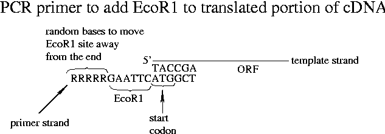

Day 12 Morning Lecture Notes
Steve Williams, Smith College
June 17, 2004
Gel purification of DNA is usually only used when isolation of two genes from the same family but with different MW is desired. Use a special "genetic technology" gel and then a Zymoclean column to purify the DNA. Zymoclean gives a higher yield (up to 50% of DNA) compared to other columns.
The quality of water used in molecular biological reactions is important. Smith uses "doubly distilled water" which is reverse-osmosis water put through a "water polishing system" from Millipore or Barnstead. Regular distilled water has too many impurities. Deionized water should also work. For small quantities, water can simply be purchased from American Bioanalytical.
mRNAs can be cloned from a pBluescript plasmid with a cDNA insert using a T3 promoter and and RNA polymerase. The mRNAs could then be used as a positive control in a reverse-transcription PCR experiment using random or downstream-specific primers. When the insert gene is transcribed in E. coli, it won't get a poly-A tail attached, as that is something eukaryotes do.
Housekeeping genes are another positive control for RT-PCR since they should be expressed in every tissue all the time. Housekeeping genes can therefore be used as a reference in comparing gene expression in different tissues like liver and spleen.
A subtle problem can occur when cDNAs are cloned into a phagemid with an appropriate promoter. A stop codon can occur in the 5' UTR, which would prevent protein translation. Shorter cDNA clones may by chance not have these stop codons. Once the cDNA is sequenced, a PCR primer can be designed that is downstream of the stop codon and the PCR product can be used as a new insert. Protein synthesis is in general quite simplified by recloning only the translated portion of a sequence into a vector. Even when stop codons are removed, unidirectional cloning must preserve the correct reading frame.
Even when correctly translated, proteins will typically have 25-30 amino acids from lac Z at the 5' end. Part of this sequence can be removed by using a restriction enzyme that hits the left arm of the lac gene. Alternatively a PCR primer can be used that contains a restriction site just upstream of the beginning of the translated part of the sequence. Many restriction enzymes won't cut at the end of a strand but the recognition site can always be moved downstream by adding more nucleotides.

(See also p. 218 of handout.) After the first cycle, the initially unhybridized part of the tail will be copied. EcoR1 can be used to cut tails off after PCR. (Of course we would use a different recognition site in the tail here if the cDNA itself contained an EcoR1 recognition site.) "Expression vectors" are used to prepare proteins as opposed to the "cloning vectors" used for genomic studies.
Up Previous Next